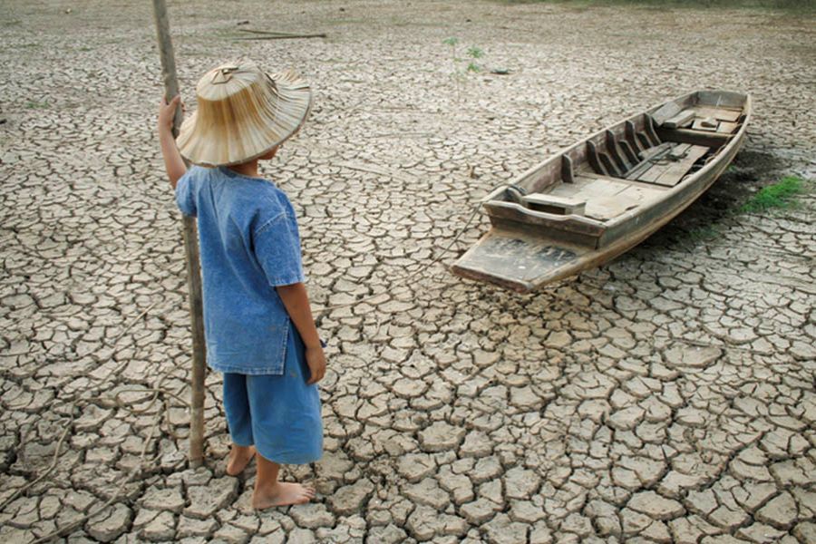
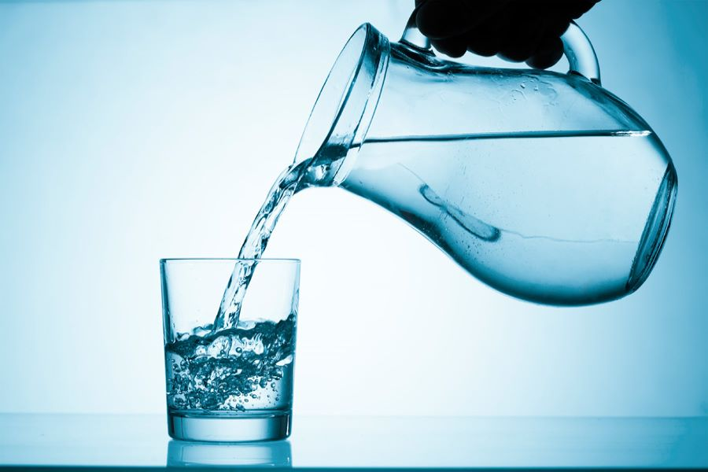

Для производства 1 кг говядины необходимо 15,4 тыс. л воды и около 7 кг зерна. Неудивительно, что треть всех пахотных земель в мире отводится под выращивание кормовых культур. Эти ресурсы можно использовать более эффективно. Так, их хватило бы для того, чтобы накормить примерно 4 млрд голодающих. К такому выводу пришли исследователи из Университета Миннесоты. Производство растительных продуктов с высоким содержанием белка гораздо более экономично. Так, по подсчетам ученых из Калифорнийского университета в Дейвисе, изготовление тофу требует вдвое меньше воды, чем куриные яйца. По сравнению с классическим сыром этот показатель ниже в четыре раза, а по сравнению с мясом — в 11 раз.
По данным Всемирной организации здравоохранения более двух миллиардов человек в мире страдают сегодня от нехватки питьевой воды. В настоящее время водный голод ощущается даже в тех местах, где раньше его не было.

